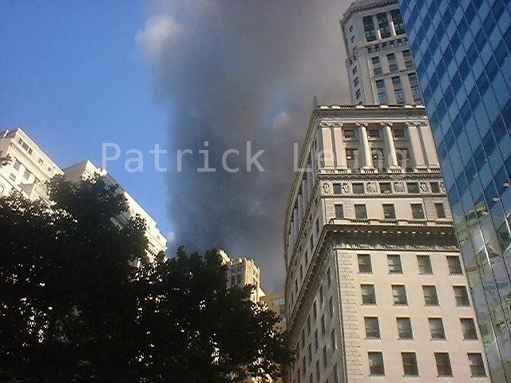
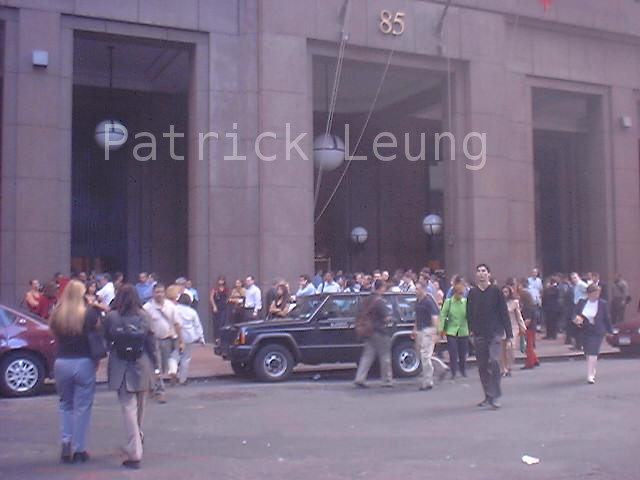
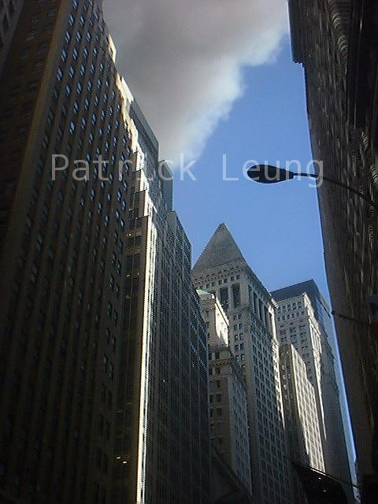
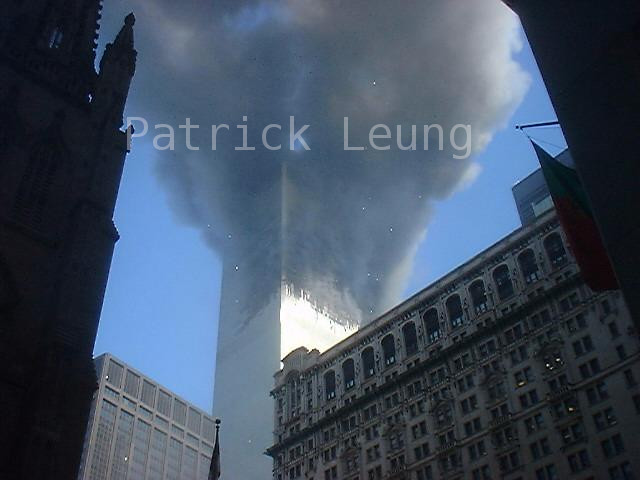
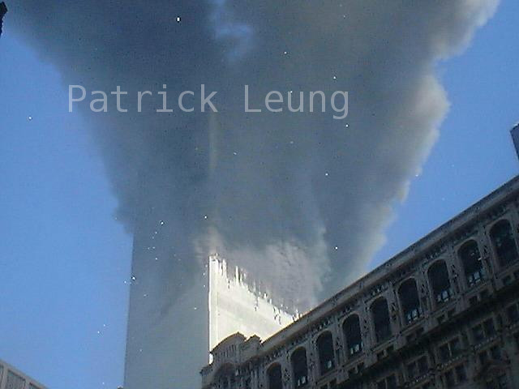

Fifteen Years On
For the Public Record
A quick look at the calendar shows it’s that time of the year again. The date creeps up on you. This year, however- marks the fifteenth year since that horrible day- a day that’s been seared into my memory. Fifteen years is a great number of years that’s passed. Volumes have already been written to record, to analyse, and to reflect on what happened that day. It seems a proper civic duty to add my own recollections of that day from my point of view to the public record. For this reason- I record the following entry.
Like Any Other Day
September 11, 2001- was just like any other early autumn day. I was a young Goldman Sachs programmer heading into work that morning in Lower Manhattan. I had recently transferred to the electronic trading team and was looking forward to a day of testing GS’s system with Cantor Fitzgerald’s eSpeed.
I was slightly peeved when the N train I took to work from Brooklyn stopped without explanation at Pacific Street. Thinking that it was a usual MTA malfunction, I walked over to the nearby Atlatnic Street station to transfer to the uptown 4 train. This train took me to the Battery Park Bowling Green station- which was only 2 blocks away the offices at 125 Broad Street.
The time was 9:15AM. I remember the exact time because at that point I was slightly peeved at being made tardy for work by the failing public transit system. As I rushed up the station exit staircase to make up for lost time, a work colleague grabbed me on the shoulder. He was heading in the opposite direction on the way down the station staircase. In terse words, he told me to go home. Puzzled, I asked why. He said- “Look up. Two planes crashed into the World Trade Center.” and quickly disappeared down the stairs.
“Look Up”
Right at the top of the station exit stairs, I arced my head up and looked straight up Broadway. Against a cloudless blue sky, I saw huge rising plumes of smoke. Fortunately, I was a tech enthusiast- and happened to be carrying a digital camera at the time. Remember- this was back in 2001- in the era before iPhones and before iPods. I took this snapshot-

Though my colleague had told me what happened, it just didn’t register that what he said was real. If the relevation were real, I could only surmise it was terrorism. That thought just did not register in me. In 2001, terrorism was the sort of news event that only happened in the Middle East or Africa. Even though there was a WTC bombing in 1994, it was already a forgotten memory.
“Just Get To Work”
The thought of leaving did not occur to me. My objective- quite stupefying now looking back- but oddly rational at the time- was to get to work. It must be the years of social conditioning that makes someone show up to work even as the world burns.
I walked two blocks eastward to Goldman Sach’s office building at 85 Broad Sreet- and found a throng of people gathered at the entrance. It seemed that just about everyone had come down from the building. Unbeknownst to me at the time- but I learned a few days afterwards- my GS colleagues had just witnessed the second plane crash into the towers and were making their way out of the building as I was trying to make my way in. I guessed that my absence from the office could be excused that day.
At around 9:20AM, I took this snapshot of 85 Broad Street.

As can be seen, there was no panic at the time- just a general confusion as to what was going on.
Since there was no way then to get to work- I had no other destination than to walk up Broadway- towards the source of the smoke. Having a digital camera available at the time presented an opportunity that further egged me into taking a closer look at the smoke. As I made my way past Wall Street along Broadway, the skyscrapers blocked my view of the towers and I could not imagine what was on fire.
At around 9:25AM, I took a third snapshot of the smoke above lower Manattan office buildings.

Surreal
The scene was surreal. With smoke in the skies, I saw what looked like pieces of paper floating down from the sky. As I walked further up Broadway, I finally reached Liberty Plaza. This plaza, with a clearing void of any buildings- finally allowed me to get a good view of the towers.
What I saw dumbstruck me for a second. I saw a whole section of one tower was on fire. I raised my camera for this shot.

I took another shot with the camera’s digitial zoom turned on.

I wasn’t sure what I felt. It was a sense of disbelief. Was this all real? The amount of black smoke coming out of the building was sobering. I did not feel horror- because the strange thing is that I could not imagine what horror it was to be inside the floors where the fires were burning. Adding to the surreality of the moment- were loose leaflets floating down weightlessly from the sky. They seem to float for an eternity as they fluttered earthbound.
Then as I ambled around to get a better angle of the view, I saw the second tower appear from behind the first- spewing the same maddening amount of black noxious smoke as the first.
Finally ran into resistance-
Archive